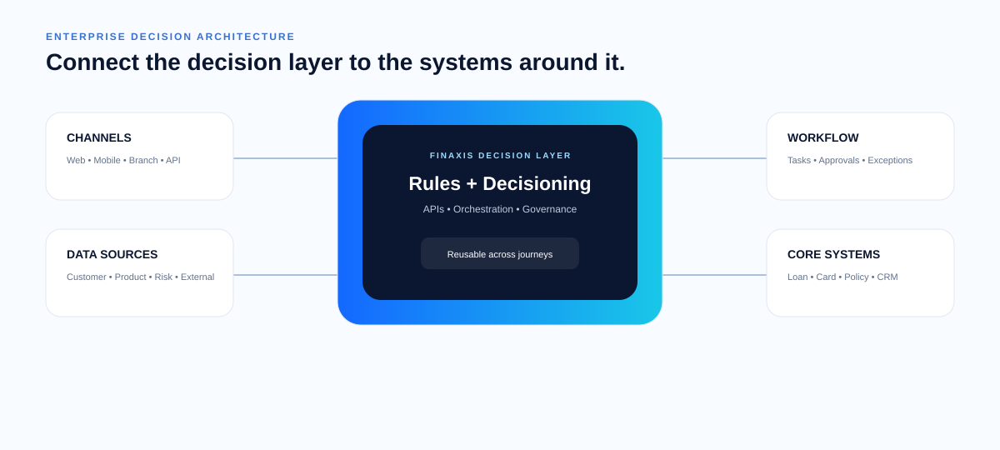

When a BFSI process is full of rules, approvals, exceptions and system hand-offs, the answer is rarely another isolated screen. It needs a connected decision and workflow approach.
Map the journey, decisions, policies, actors, data and exceptions.
Separate business rules from workflow and application concerns.
Implement decision services, APIs, workflow and integration layers.
Measure, govern, improve and safely evolve the process.
Instead of embedding the same logic in multiple journeys, create a decision capability that can be called where it is needed.

Eligibility, risk segmentation, policy checks, approval routing, pricing and exception handling.
KYC checks, document requirements, segmentation, routing and approval decisions.
Segmentation, strategy selection, task allocation, prioritisation and next-action decisions.
Product, customer and risk facts can be combined to determine a controlled offer or price.
Vendor or agent eligibility, onboarding, approval and ongoing operational controls.
Complex plans, slabs, eligibility, adjustments, calculations, approvals and payout workflows.
The goal is not to make technology complicated. The goal is to make complex business logic explicit and easier to change safely.
Tell us where rules, workflow and systems are slowing the business down.